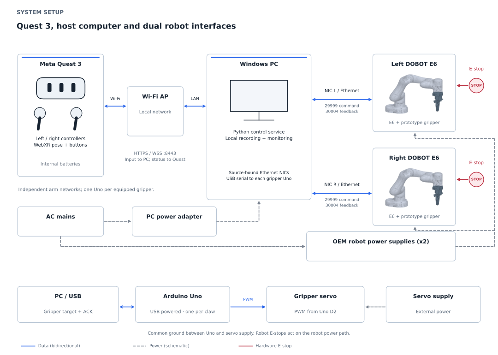
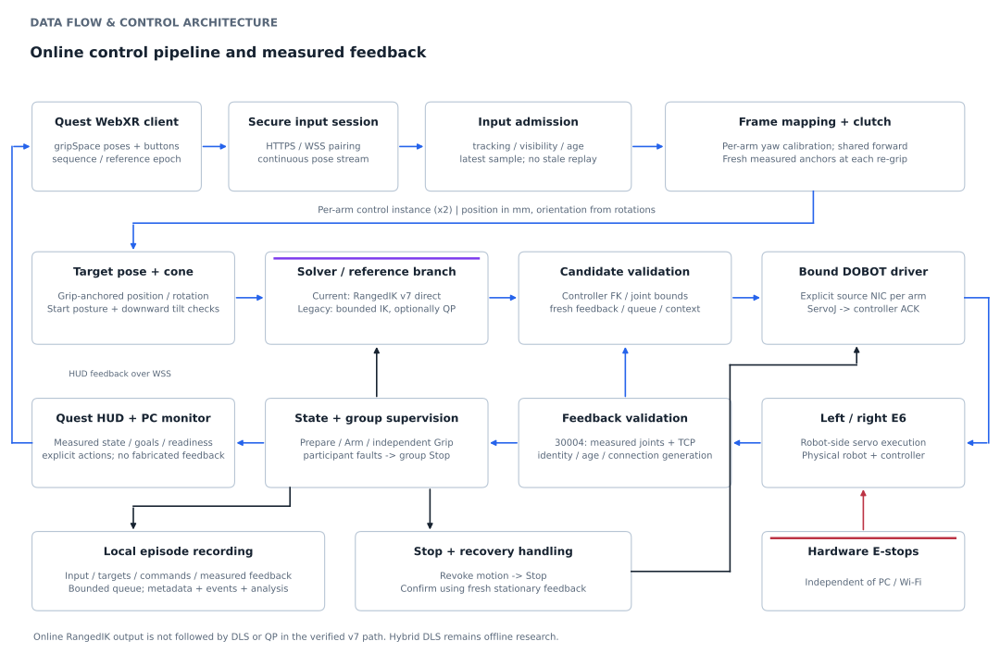

Quest 3–Based Bimanual Teleoperation
of DOBOT E6 Robots
An inspectable VR-to-robot control stack, developed from first motion to a calibrated bimanual workflow.


Measured performance
Descriptive comparison of recorded left-arm sessions, grouped by the executed algorithm. The experiments used different motions and target policies; this is not a matched-trajectory benchmark. The third column is the verified RangedIK v7 system, not an unverified hybrid controller.
{{FINDINGS}}
“Processed goal” is the recorded controller target before the final reference filter; it is not a reconstruction of the raw hand's complete intent. “Accepted reference” is an acknowledged command target. Speed is estimated from measured TCP samples. Command step size is a continuity proxy, not measured mechanical vibration. P95 denotes the 95th percentile; maxima are retained.
Development footage
From first motion to an integrated VR workflow. Dates were supplied by the author. Exact video-to-log alignment is not established; the metric table is grouped by recorded software configuration.
Click Play on a video to watch here. Use the progress bar or fullscreen control; a WebM alternative is available if your browser cannot play MP4.